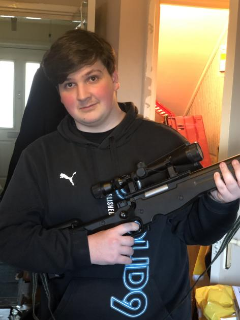

When it comes to CSGO i have a little bit of a love hate relationship with it, sometimes its amazing and sometimes its awful it all depends on the type of teammates. CSGO is a very team work heavy game if you wanna win you will have to work together, that isnt the easiest when the people who play CSGO are know for being incredible mean and quite annoying so sometimes it better to mute them. Right now i am working towards getting gold nova and ive been trying for years and im right now the highest ive ever been and im only 2 ranks away which is still quite a climb. Another aspect of CSGO is the gun skin side my favourite gun skin is the "Vulcan" however it is extremely expensive.
